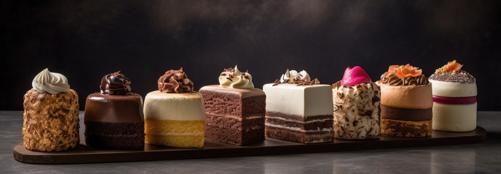
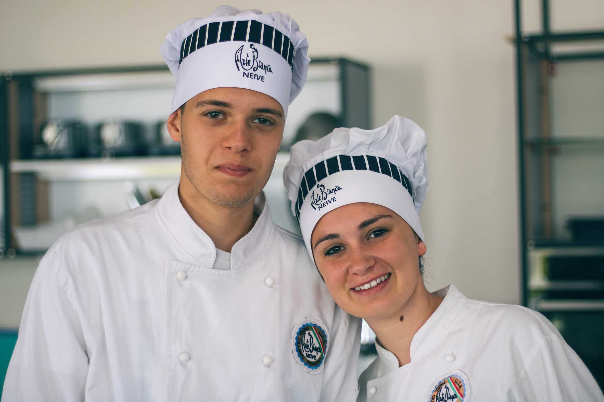
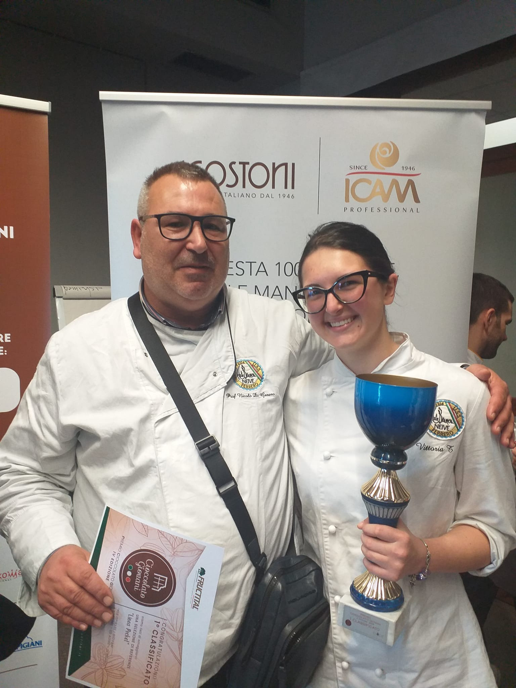

- I nostri fiori all’occhiello -

Gli studenti dell’Arte Bianca di Neive partecipano ogni anno a competizioni nazionali e internazionali di pasticceria e panificazione.
Queste esperienze permettono di confrontarsi con altri giovani talenti, mettere in pratica le competenze acquisite e conquistare riconoscimenti che attestano la qualità della nostra formazione.

L’Arte Bianca classificata al 1° posto
I migliori giovani talenti della pasticceria italiana si sfidano a colpi di cioccolato, glassa, pan di spagna e caffè per contendersi la palma di miglior pasticcere d’Italia juniores.
Ciascuna scuola sarà rappresentata da una squadra formata da due concorrenti, che saranno giudicati da una giuria composta da maestri pasticceri della FIPGC e rappresentanti del MIUR.
Il 6 maggio 2022 è una data da ricordare per l'Arte Bianca di Neive: Silvia Giamello e Mattia Sabatini, con il loro professore Rosario Torre, si sono classificati al primo posto con il loro spettacolare dolce “Dromos” alla cerimonia di premiazione della quarta edizione del Campionato Nazionale di pasticceria dedicato agli istituti alberghieri d’Italia presso l’Istituto IPIA “Galileo Ferraris” di Iglesias (Sardegna).
L’Arte Bianca ospita la quinta edizione
L'Istituto vincitore ha avuto l'onore di ospitare l'edizione successiva della manifestazione ed è con grande orgoglio e senza falsa modestia che per 3 giorni (28, 29 e 30 marzo) Neive è stata Capitale Italiana della Pasticceria.
La quinta edizione del Campionato Nazionale di pasticceria dedicato agli istituti alberghieri d’Italia, promosso dal Ministero della Pubblica Istruzione e di rilievo nazionale, organizzato dalla Fipgc (Federazione Italiana Pasticceria e Gelateria), ha visto la partecipazione di studenti e docenti di 30 scuole provenienti da tutta Italia ed è stato patrocinato dalla Regione Piemonte e dai Comuni di Alba e Neive.
L’Arte Bianca classificata al 1° posto
Il Premio Cioccolato Giovani è un concorso nazionale di Cioccolateria organizzato dall'Associazione Pièce e riservato agli studenti degli ultimi anni delle scuole di settore di tutta Italia (istituti professionali e alberghieri), di età compresa fra i 17 e i 21 anni.
Vittoria Tibaldi dell'Arte Bianca di Neive ha vinto la quarta edizione del Premio Cioccolato Giovani!
Vittoria, oltre al primo premio, si è aggiudicata il premio speciale "Scintilla creativa" in memoria di Emilia Chiriotti.
Complimenti al prof. Nicolò Di Gesaro, che ha ricevuto il premio quale miglior formatore intitolato alla memoria del grande pasticcere Capitano Rosso, e complimenti alla sua allieva, davvero un ottimo risultato!!

Sede dell'IISS Piera Cillario Ferrero tel: 0173/441944 / Indirizzo: Via Balbo, 8 - Alba
Sede associata di Neive tel: 0173/67168 / Indirizzo: Via Rocca, 10
Sito istituzionale www.cillarioferrero.edu.it
E-mail: artebiancaneive@cillarioferrero.it